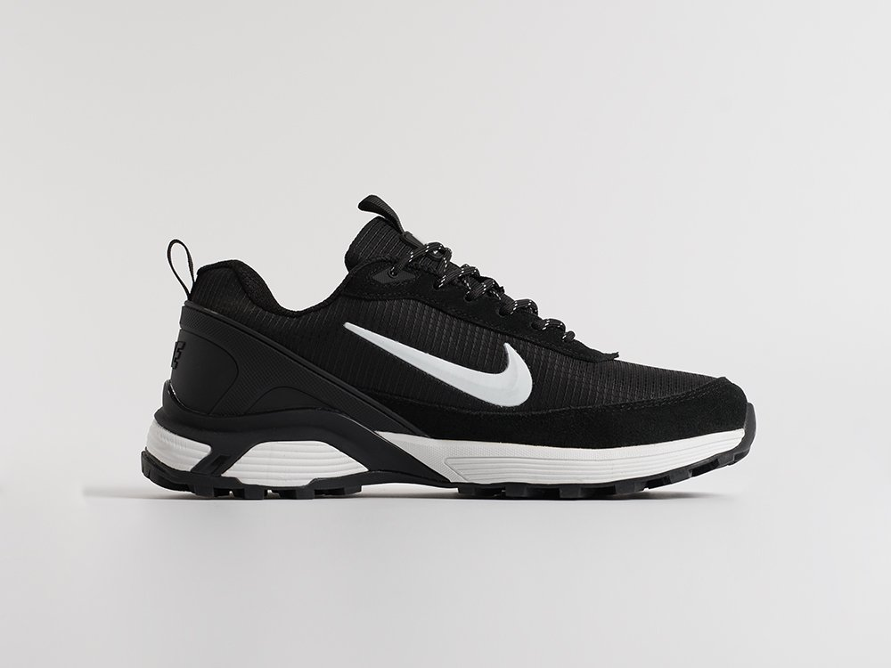
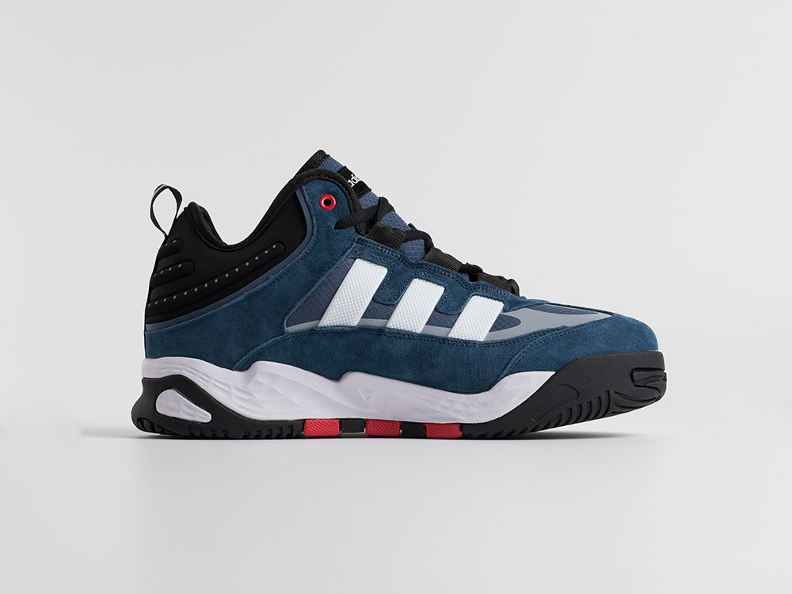
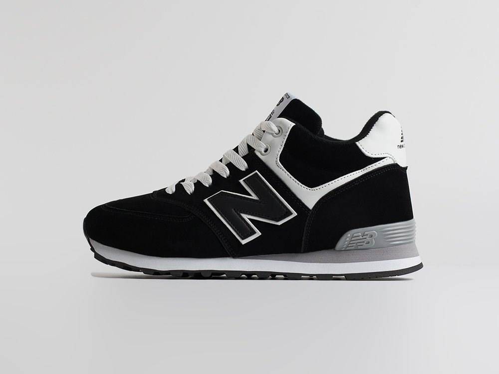
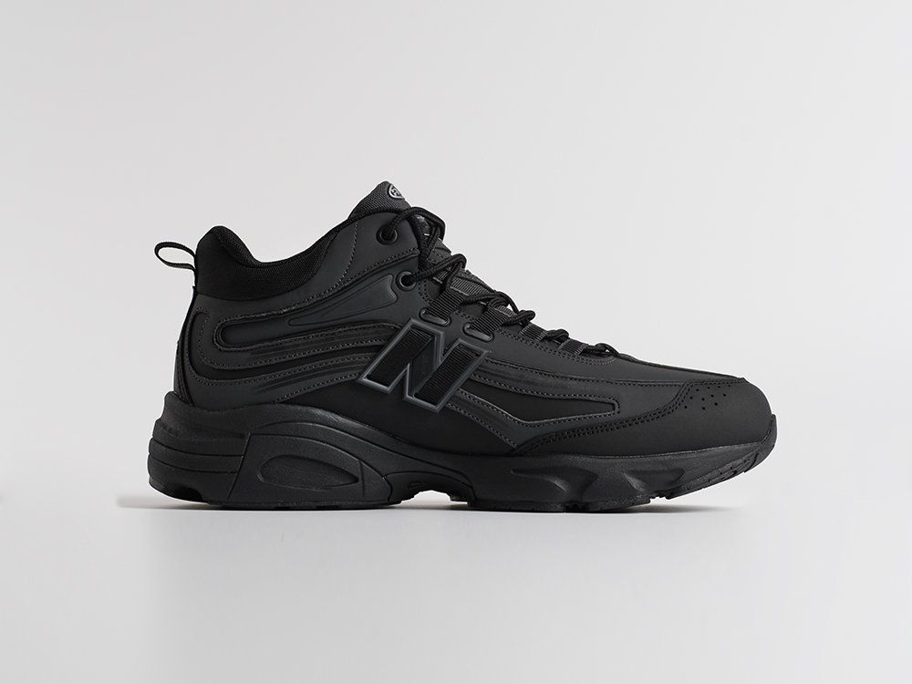
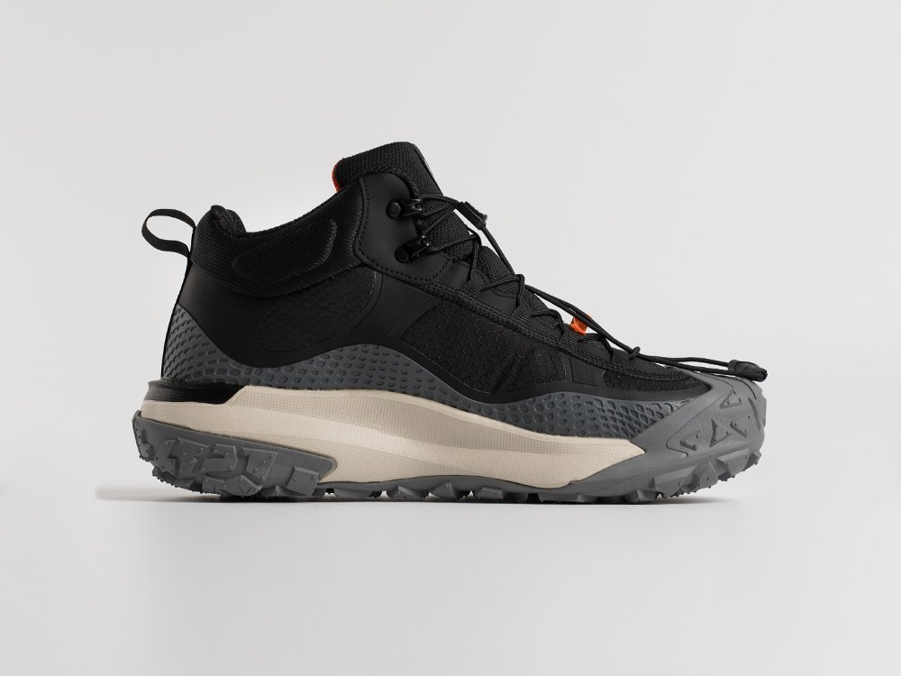
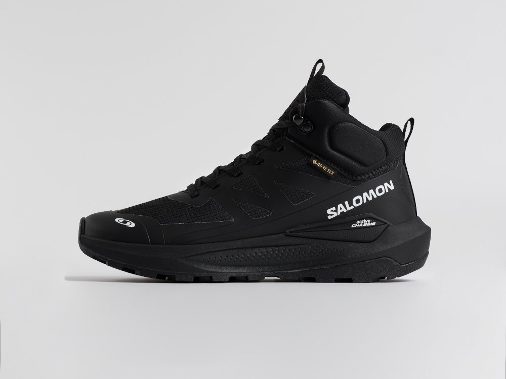
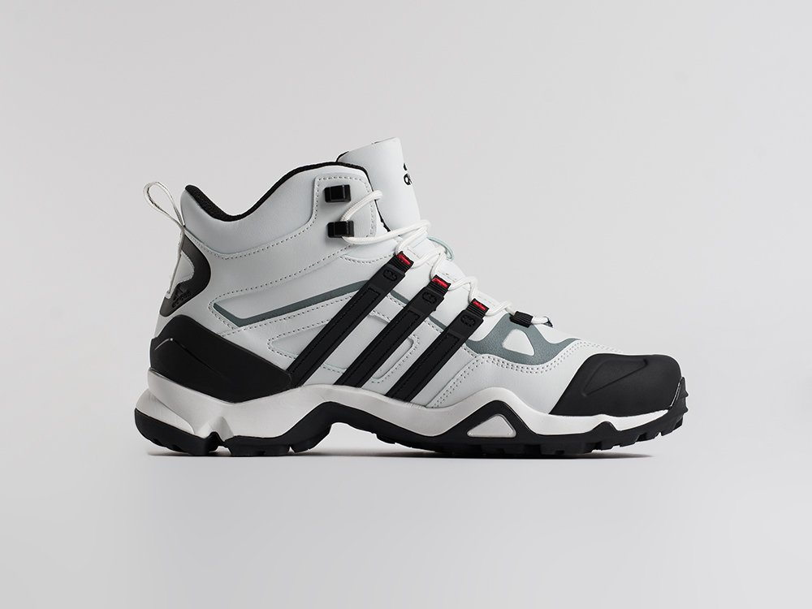
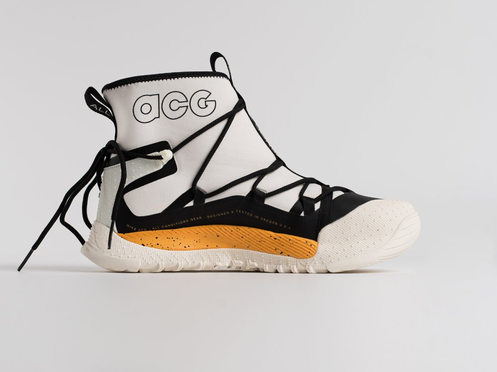
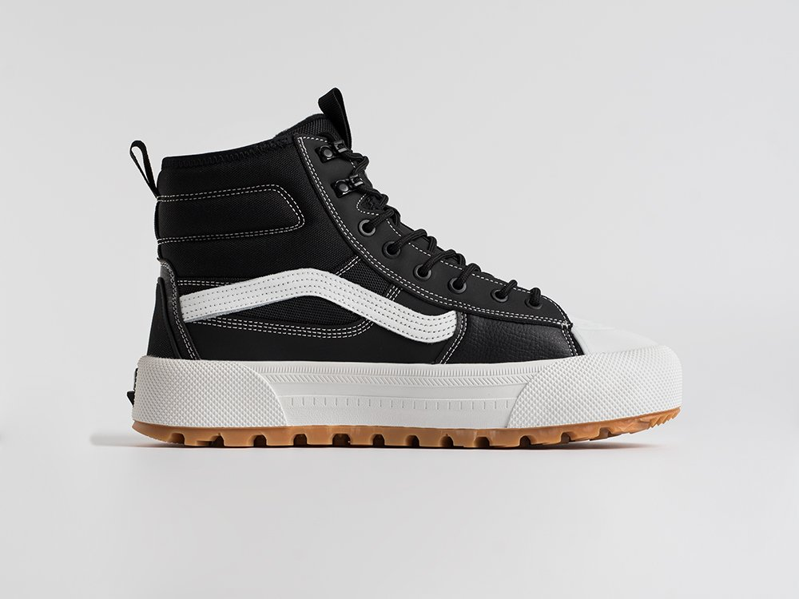
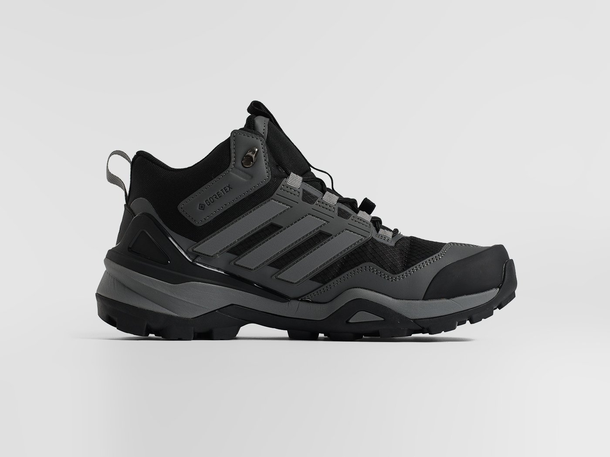

Зимние кроссовки: 10 моделей для города, снега и слякоти
10 зимних моделей для города, долгой ходьбы, снега и слякоти. Объясняем, кому подходит каждая пара и какие особенности важно знать перед заказом.

Коротко: что выбрать
- Для города и коротких перемещенийNike Rivah Low →
Nike Rivah Low — low-профиль с мехом и заявленной Gore-Tex. - Если много ходитеNike ACG Mountain Fly Mid →
Nike ACG Mountain Fly Mid — Mid, Gore-Tex и элементы возле подошвы. - Для снегаNike ACG Air Terra Antarktik →
Nike ACG Air Terra Antarktik — высокий закрытый формат. - Для слякотиAdidas Terrex AX4 Mid →
Adidas Terrex AX4 Mid — Mid + Gore-Tex + Continental.
Как мы выбирали
Мы продаём обувь с 2014 года и опираемся не только на характеристики производителей, но и на реальные данные покупателей. В нашем ассортименте более 6 000 моделей, за 2026 год оформлено свыше 240 000 заказов, а на наших сайтах и витринах маркетплейсов собрано более 30 000 отзывов.
При составлении рейтинга мы учитываем продажи, оценки покупателей, комфорт, практичность и типичные замечания по каждой модели.
Как ориентироваться по температуре
Температура — только один из факторов выбора зимней обуви. При одинаковых градусах ощущения зависят от активности, времени на улице, ветра, влажности, носков и посадки, поэтому модели лучше сравнивать по сочетанию утепления, высоты, конструкции верха и влагозащитных элементов.
Учитывайте активность, осадки и время на улице.
Важна вся система: утепление, посадка, носки, высота и длительность нахождения на улице.
Для долгого нахождения на морозе особенно важны длительность прогулки, активность, носки и общий уровень утепления обуви.
Обычные утеплённые кроссовки нельзя автоматически считать заменой специализированной зимней обуви.
На каждый день в городе
Если обычный день — короткие перемещения, машина, офис и городские маршруты, сначала смотрите на эти модели.
| Модель | Город | Снег | Слякоть |
|---|---|---|---|
 Nike Rivah Low → |
5/5 | 2/5 | 4/5 |
 Adidas Niteball Hi → |
5/5 | 3/5 | 2/5 |
 New Balance 574 Mid → |
4/5 | 3/5 | 2/5 |
 New Balance 740 Mid → |
4/5 | 3/5 | 2/5 |
← Таблицу можно двигать пальцем →
Nike Rivah Low →
← Галерею можно листать пальцем →
Кому подойдётТем, кому нужна зимняя обувь для города и коротких перемещений без высокого верха.
Почему рекомендуемLow-профиль заметно отличает Rivah от большинства зимних моделей подборки.
ОсобенностиНизкий профиль — не прямой аналог высоким зимним моделям для регулярного глубокого снега.
12 990 ₽6 490 ₽
Adidas Niteball Hi →
← Галерею можно листать пальцем →
Кому подойдётТем, кому нужен более высокий городской силуэт без акцента на мембрану.
Почему рекомендуемВысокий формат, утепление и Lightstrike хорошо отделяют её от обычных low-моделей.
ОсобенностиМембрана не заявлена: логичнее как утеплённый городской вариант, а не как модель для мокрой погоды.
12 990 ₽6 490 ₽
New Balance 574 Mid →
← Галерею можно листать пальцем →
Кому подойдётТем, кому нужен спокойный утеплённый Mid-вариант для городской зимы.
Почему рекомендуемЗамшевый верх, мех, ENCAP и EVA формируют понятную городскую конструкцию без заявленной мембраны.
ОсобенностиМодель заметно маломерит — размер нужно выбирать особенно внимательно.
9 890 ₽4 930 ₽
New Balance 740 Mid →
← Галерею можно листать пальцем →
Кому подойдётТем, кто ищет утеплённую Mid-модель для города и подходит по доступным размерам.
Почему рекомендуемACTEVA, N Ergy и заявленный Thinsulate делают её отдельным вариантом внутри городской группы.
ОсобенностиТекущий размерный ряд сильно ограничен; мембрана не заявлена.
12 990 ₽6 490 ₽
Для долгой ходьбы
Здесь важнее конструкция подошвы, высота, утепление и посадка, а не абстрактная оценка «комфорта».

| Модель | Ходьба | Снег | Слякоть |
|---|---|---|---|
 Nike ACG Mountain Fly Mid → |
5/5 | 4/5 | 4/5 |
 Salomon Elixir Activ Mid GTX → |
4/5 | 5/5 | 4/5 |
| Adidas Niteball Hi → | 4/5 | 3/5 | 2/5 |
| New Balance 740 Mid → | 4/5 | 3/5 | 2/5 |
← Таблицу можно двигать пальцем →
Nike ACG Mountain Fly Mid →
← Галерею можно листать пальцем →
Кому подойдётТем, кто зимой много ходит и чередует обычный город, снег и влажное покрытие.
Почему рекомендуемMid-профиль, пена, протектор и заявленная Gore-Tex дают понятный набор для длинных смешанных маршрутов.
ОсобенностиХорошо подходит для смешанных зимних маршрутов: город, снег и влажное покрытие.
14 290 ₽7 140 ₽
Salomon Elixir Activ Mid GTX →
← Галерею можно листать пальцем →
Кому подойдётТем, кому нужен высокий зимний вариант для длительных прогулок, снега и влажной погоды.
Почему рекомендуемВысокий формат, GTX и Activ Chassis хорошо соответствуют смешанным зимним маршрутам.
ОсобенностиМодель маломерит: размерную сетку нужно проверять особенно внимательно.
5 490 ₽
Уже подробно разобраны в других разделах: Adidas Niteball Hi → · New Balance 740 Mid →
Для снега
При регулярном движении по снегу отдельно смотрим на высоту и степень закрытости конструкции.

| Модель | Снег | Слякоть | Город |
|---|---|---|---|
 Adidas Terrex Winter → |
5/5 | 4/5 | 3/5 |
 Nike ACG Air Terra Antarktik → |
5/5 | 4/5 | 3/5 |
 Vans Sk8-Hi MTE-3 Gore-Tex → |
4/5 | 4/5 | 4/5 |
| Salomon Elixir Activ Mid GTX → | 5/5 | 4/5 | 3/5 |
← Таблицу можно двигать пальцем →
Adidas Terrex Winter →
← Галерею можно листать пальцем →
Кому подойдётТем, кому нужен более закрытый высокий формат для снега и обычной городской зимы.
Почему рекомендуемВысокий профиль, мех и заявленная Gore-Tex делают модель логичной для сравнения в снежном сценарии.
ОсобенностиУзкая посадка: особенно внимательно выбирайте размер при широкой стопе и плотных зимних носках.
15 590 ₽7 790 ₽
Nike ACG Air Terra Antarktik →
← Галерею можно листать пальцем →
Кому подойдётТем, кто регулярно сталкивается со снегом и хочет высокий закрытый формат.
Почему рекомендуемВысокий верх и заявленная влагозащитная конструкция хорошо соответствуют снежному сценарию.
ОсобенностиВысокий закрытый формат особенно уместен для обычной городской зимы и прогулок по снегу.
7 790 ₽
Vans Sk8-Hi MTE-3 Gore-Tex →
← Галерею можно листать пальцем →
Кому подойдётТем, кому нравится высокий силуэт Vans и нужна зимняя версия для города и снега.
Почему рекомендуемВысокий Sk8-Hi формат, мех и Gore-Tex выделяют модель среди более спортивных вариантов.
ОсобенностиВысокий силуэт и мембранная конструкция особенно уместны в снег и сырую зимнюю погоду.
7 140 ₽
Уже подробно разобраны в других разделах: Salomon Elixir Activ Mid GTX →
Для мокрого снега и слякоти
Для мокрого снега и городской слякоти в первую очередь сравниваем модели с влагозащитной конструкцией, более закрытым верхом и выраженным протектором.

| Модель | Слякоть | Снег | Ходьба |
|---|---|---|---|
 Adidas Terrex AX4 Mid → |
5/5 | 4/5 | 4/5 |
| Nike ACG Air Terra Antarktik → | 4/5 | 5/5 | 3/5 |
| Nike ACG Mountain Fly Mid → | 4/5 | 4/5 | 5/5 |
| Salomon Elixir Activ Mid GTX → | 4/5 | 5/5 | 4/5 |
← Таблицу можно двигать пальцем →
Adidas Terrex AX4 Mid →
← Галерею можно листать пальцем →
Кому подойдётТем, кто зимой часто ходит по городу в мокрый снег и хочет Mid-формат.
Почему рекомендуемСочетает Mid-профиль, заявленную Gore-Tex и резиновую подметку Continental.
ОсобенностиMid-конструкция хорошо подходит для мокрого снега и городской слякоти.
14 290 ₽7 140 ₽
Уже подробно разобраны в других разделах: Nike ACG Air Terra Antarktik → · Nike ACG Mountain Fly Mid → · Salomon Elixir Activ Mid GTX →
Улица, помещение и перегрев
Если день состоит из переходов между улицей, автомобилем и помещением, учитывайте общую закрытость, высоту, утепление и мембрану.
| Модель | Город | Снег | Слякоть |
|---|---|---|---|
| Nike Rivah Low → | 5/5 | 2/5 | 4/5 |
| New Balance 574 Mid → | 4/5 | 3/5 | 3/5 |
| New Balance 740 Mid → | 4/5 | 3/5 | 3/5 |
← Таблицу можно двигать пальцем →
Если стопа быстро перегревается в помещении, сравнивайте модели по высоте и общей закрытости: Low-профиль ощущается менее массивным, а Mid и High сильнее закрывают область вокруг щиколотки.
Если нужен высокий верх
Здесь важнее быстро сопоставить высоту, заявленную мембрану и особенности посадки.

| Модель | Высота | Снег | Слякоть |
|---|---|---|---|
| Adidas Terrex Winter → | 5/5 | 4/5 | 3/5 |
| Nike ACG Air Terra Antarktik → | 5/5 | 4/5 | 3/5 |
| Vans Sk8-Hi MTE-3 Gore-Tex → | 5/5 | 4/5 | 4/5 |
| Salomon Elixir Activ Mid GTX → | 5/5 | 4/5 | 3/5 |
← Таблицу можно двигать пальцем →
Дополнительный вариант
Salomon S/Lab Genesis Spine не входит в основной TOP-10 и вынесена отдельно из-за необычной конструкции и ограниченного размерного ряда.
Salomon S/Lab Genesis Spine →
← Галерею можно листать пальцем →
Кому подойдётТем, кому подходит закрытая конструкция с молнией и есть нужный размер.
Почему рекомендуемНеобычная конструкция отличает её от основного TOP-10, поэтому модель вынесена отдельно.
ОсобенностиНебольшой выбор размеров: сначала проверьте наличие своего размера.
7 140 ₽
Сравнить все модели
| Модель | Лучший сценарий | Сценарий | Снег | Слякоть |
|---|---|---|---|---|
| Adidas Terrex Winter → | Снег | 5/5 | 4/5 | 3/5 |
| Adidas Terrex AX4 Mid → | Слякоть | 5/5 | 4/5 | 4/5 |
| Adidas Niteball Hi → | Город | 5/5 | 3/5 | 2/5 |
| Nike ACG Air Terra Antarktik → | Снег | 5/5 | 4/5 | 3/5 |
| Nike Rivah Low → | Город | 5/5 | 2/5 | 4/5 |
| Nike ACG Mountain Fly Mid → | Ходьба | 5/5 | 4/5 | 4/5 |
| New Balance 574 Mid → | Город | 4/5 | 3/5 | 2/5 |
| New Balance 740 Mid → | Город | 4/5 | 3/5 | 2/5 |
| Vans Sk8-Hi MTE-3 Gore-Tex → | Снег / город | 4/5 | 4/5 | 4/5 |
| Salomon Elixir Activ Mid GTX → | Ходьба / снег | 4/5 | 5/5 | 4/5 |
← Таблицу можно двигать пальцем →
Что бы выбрал эксперт
Для города: Nike Rivah Low →
Если много ходите: Nike ACG Mountain Fly Mid →
Для снега: Nike ACG Air Terra Antarktik →
Для слякоти: Adidas Terrex AX4 Mid →
Промокод: ДЕКАБРЬ26 → Дает скидку 15% при оформлении заказа.
Смотреть зимние модели →